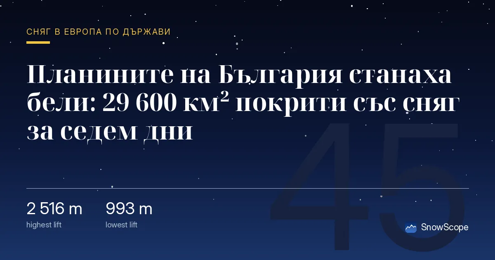
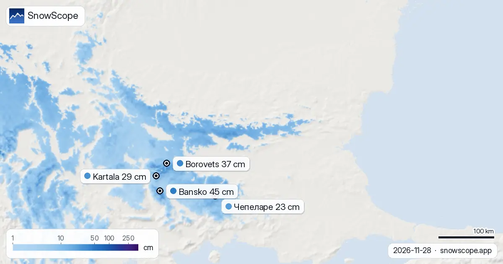
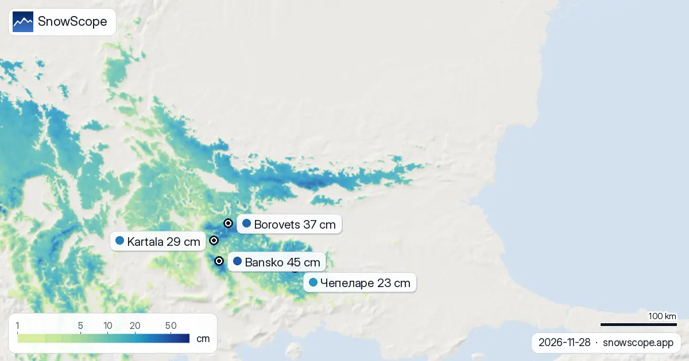

Планините на България станаха бели: 29 600 км² покрити със сняг за седем дни
Планините на България се преобразиха за една седмица. Снегът сега покрива 30 390 км² от страната—97 процента от картираната площ—след драматичен скок от само 770 км² преди седем дни. Банско е първо между всички курорти със 45 см нов сняг през последния 72-часов период.
Вижте снежната прогноза за Банско в приложението SnowScopeДебелина на снега, известия и 3D карта, безплатно.
Една седмица, пълна трансформация
Преди седмица снегът е редкост в България. Само 770 км² показват бяло на картата. Вчера беше 6 880 км². Днес е 30 390 км². Този скок—29 620 км²—не е нормален за края на ноември в сухите планини на Балканския полуостров. Един фронт дойде силен и бърз.
Банско сега е първо между курортите със 45 см дълбочина и 41 см нов сняг през последните три дни. Боровец е втори с 37 см, също със силен прясно падналия сняг от 35 см за три дни. Картала има 29 см. Разликата между първи и средни е ясна: височината и местоположението имат значение, когато времето е такова.
| Day | White area | Most new snow in 3 days | Deepest resort |
|---|---|---|---|
| неделя, 22 ноември | 420 km² | 3 cm | Bansko |
| понеделник, 23 ноември | 1 860 km² | 11 cm | Borovets |
| вторник, 24 ноември | 1 370 km² | 8 cm | Bansko |
| сряда, 25 ноември | 1 370 km² | 10 cm | Bansko |
| четвъртък, 26 ноември | 7 370 km² | 1 cm | Vitosha |
| петък, 27 ноември | 6 920 km² | 6 cm | Bansko |
| събота, 28 ноември | 30 390 km² | 34 cm | Bansko |

Където снегът падна най-силно
Рилските планини получиха най-много. Картата показва 52 см нов сняг там за 72 часа—повече, отколкото където и да е другаде в страната. Пиринските планини получиха 46 см, а Балканските планини 44 см. Тези три верига образуват гребен, който минава от юг на север през България и възприема пълната сила на системата.
Височината има значение. На 2 500 м и по-високо картата показва средна дълбочина 40 см с пълно покритие. Между 2 000 и 2 500 м, 24 см е типично. На 1 500–2 000 м, 15 см. Под 1 000 м снегът се намалява бързо, а на 500–1 000 м лежат само 9 см на земята. Линията на снега е на 600 м, така че ниските долини остават голи.

Числата разказват историята
За 24 часа сами по себе си картата записа до 29 см нов сняг на най-високите станции. За 72 часа, 34 см падаха на най-мокрите места. Това е истински сняг за ноември в планини, които видят по-малко от 100 дни сняг годишно в средното. Площта, покрита с поне 5 см нов сняг за три дни, обхваща 25 950 км²—почти целия картиран регион.
От вчера до днес снежно покритата площ нарастна с 23 510 км². Данните от тренда показват как се случи бързо: на 26 ноември, само 1 370 км² имаше сняг; до 28 ноември, 30 390 км². Системата се изгради бързо и се задържа.
Какво следва
Се прогнозира още сняг. Утре, 29 ноември, е най-снежния ден напред, с очаквано до 20 см. Това ще се добави към това, което вече лежи на земята. През следващите три дни, Банско може да очаква още 18 см; Боровец 16 см; Чепеларе 19 см. Картата показва, че 25 950 км² ще останат под активни снеговалежи през този период.
След 1 декември прогнозата затихва. Следващите седем дни показват максимум 22 см, но той ще е разпръснат тънко във времето и пространството. Началото на декември е често сухо на Балканския полуостров. Лижният сезон тук се стартира на силна основа.
Как се подреждат височините
Лентите на височината разкриват цялата картина. Снежното покритие е 100 процента между 1 000 и 2 500 м. Под 1 000 м то спада на 95 процента—някои ниски области и проходи остават голи. Над 2 500 м, дълбочината е най-голяма: 40 см средно. Това е добър лижен сняг за ноември, макар че не дълбок по зимните стандарти.
Банско е първо в таблицата на курортите с 2 516 м. Боровец достига 2 538 м. И двамата имат преимуществото на височината. Картала сяда по-ниско с 2 245 м, но все още има 29 см. Чепеларе и Малиовица са още по-ниски и показват по-тънко покритие—23 см и 23 см—но и двамата получиха прясно падналия сняг през последните три дни и ще бъдат полезни от утрешната прогноза за буря.
Контекст от региона
Съседите на България разказват различна история. Планините на Румъния са само 56 процента бели, със само 39 см на лидера Шуреану. Сърбия е 100 процента покрита, но с по-плитки дълбочини—22 см на Копаоник. България улови главната система. Съседите й получиха краищата.
В сухите планини този вид бърз снежен приход е подарък. Той пълни резервоарите и подготвя зимния сезон. Картата показва пълния обхват на промяната през тази седмица. Използвайте я за планиране. Най-добрият сняг е най-висок; най-стабилният сняг е най-пресен.
Съвети за скиори
- Банско и Боровец имат най-дълбокия сняг и най-много прясна пудра. Ако тръгвате, идете високо: над 2 000 м снегът е консистентен и дълбок.
- Утре (29 ноември) носи още 20 см нов сняг. Почакайте, ако можете, или идете рано преди он да бъде разбит на по-ниските котници.
- Под 1 500 м, скали могат все още да бъдат близо до повърхността под тънкото ново покритие. Оставайте на писта или проверете локалните условия преди да идете настрана.
- Проверете официалния лавинен бюлетин преди всяко лиане извън писта. Прясно, тежко падналия сняг на стръмни склонове след бързо нарастване може да се срине.
- Снегът е мокър и тежък след такъв бърз фронт. Рано сутрин е по-добро от следобед на открити склонове.
About these numbers
Resort snow depths are the deepest snow on the resort's upper slopes on the date shown; they are estimates for an area, not a measurement at one point. Forecasts can change. Always read the official avalanche bulletin before going off-piste.
Cite this report
For research, teaching or the press: the numbers and charts are free to reuse under CC BY 4.0 with this citation.
SnowScope (2026), Планините на България станаха бели: 29 600 км² покрити със сняг за седем дни, https://snowscope.app/blog/bg/2026/11/bulgaria-snow-cover-gain-this-week-28-november-2026.html, accessed 2026-11-28
SnowScope (Atlas Labs). (2026, November 28). Планините на България станаха бели: 29 600 км² покрити със сняг за седем дни. SnowScope snow reports. https://snowscope.app/blog/bg/2026/11/bulgaria-snow-cover-gain-this-week-28-november-2026.html
BibTeX
@misc{snowscope2026bulgariasnowcovergainthi,
author = {{SnowScope (Atlas Labs)}},
title = {Планините на България станаха бели: 29 600 км² покрити със сняг за седем дни},
year = {2026},
month = nov,
howpublished = {\url{https://snowscope.app/blog/bg/2026/11/bulgaria-snow-cover-gain-this-week-28-november-2026.html}},
note = {Published 2026-11-28 12:13 UTC; accessed 2026-11-28}
}· CC BY 4.0 · Methods, data and tools →
Bansko: snow and temperature by height, this winter vs last (tools) →
Follow Банско
Безплатно: съобщение, когато идва нов сняг, и прогнозата всяка сутрин.